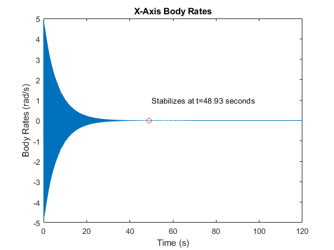
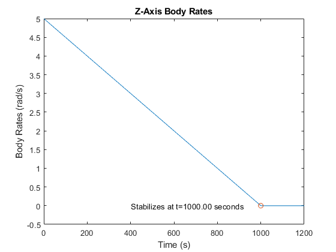
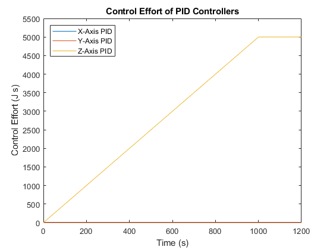
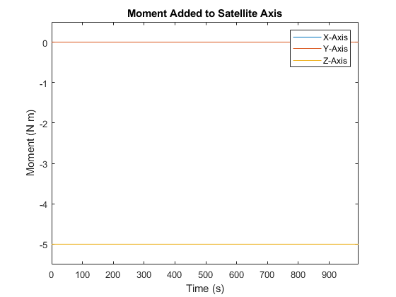
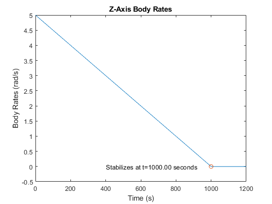
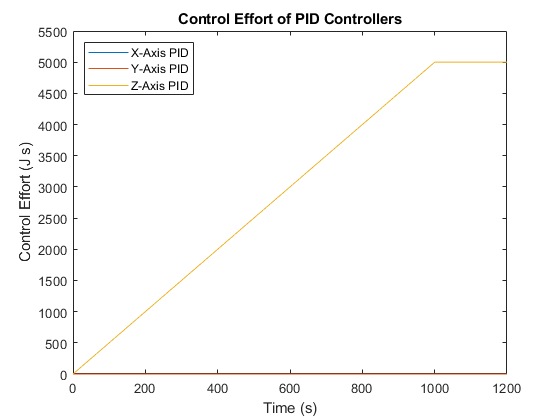
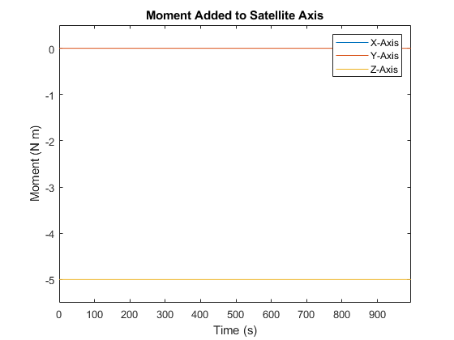

clear all close all ix =100; iy = 100; iz = 1000; sim('model') tol=.01; for i = 2:length(u) if mean(abs(u(i,4))+abs(u(i+1,4))+abs(u(i+2,4))+abs(u(i+3,4))+abs(u(i+4,4))) < tol u1_end = i; break end end for i = 2:length(u) if mean(abs(u(i,5))+abs(u(i+1,5))+abs(u(i+2,5))+abs(u(i+3,5))+abs(u(i+4,5))) < tol u2_end = i; break end end tol=.0001; for i = 2:length(u) if mean(abs(u(i,6))+abs(u(i+1,6))+abs(u(i+2,6))+abs(u(i+3,6))+abs(u(i+4,6))) < tol u3_end = i; break end end figure(1) plot(tout,u(:,4)) hold on plot(u1_end/100,0,'o') title('X-Axis Body Rates') xlabel('Time (s)') ylabel('Body Rates (rad/s)') xlim([0,120]) text(50,1,'Stabilizes at t=48.93 seconds') figure(2) plot(tout,u(:,5)) hold on plot(u2_end/100,0,'o') title('Y-Axis Body Rates') xlabel('Time (s)') ylabel('Body Rates (rad/s)') xlim([0,120]) text(50,1,'Stabilizes at t=48.82 seconds') figure(3) plot(tout,u(:,6)) hold on plot(u3_end/100,0,'o') title('Z-Axis Body Rates') xlabel('Time (s)') ylabel('Body Rates (rad/s)') xlim([0,1200]) ylim([-.5,5]) text(400,0,'Stabilizes at t=1000.00 seconds') figure(4) plot(tout,controleffort(:,1)) hold on plot(tout,controleffort(:,2)) plot(tout,controleffort(:,3)) title('Control Effort of PID Controllers') xlabel('Time (s)') ylabel('Control Effort (J s)') xlim([0,1200]) ylim([0,5500]) legend('X-Axis PID','Y-Axis PID','Z-Axis PID','location','northwest') figure(5) plot(tout,u(:,1)) hold on plot(tout,u(:,2)) plot(tout,u(:,3)) title('Moment Added to Satellite Axis') xlabel('Time (s)') ylabel('Moment (N m)') xlim([0,995]) ylim([-5.5,.5]) legend('X-Axis','Y-Axis','Z-Axis')
   
  